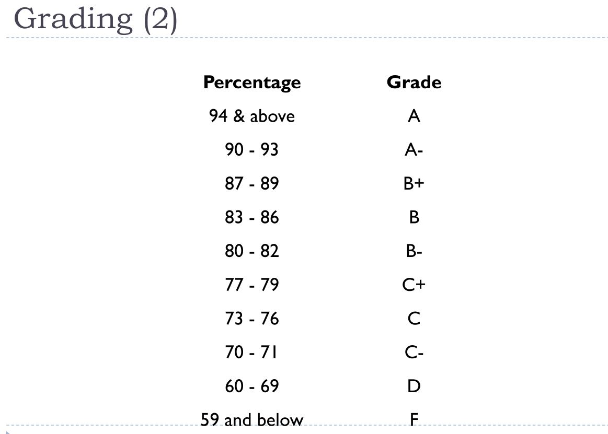
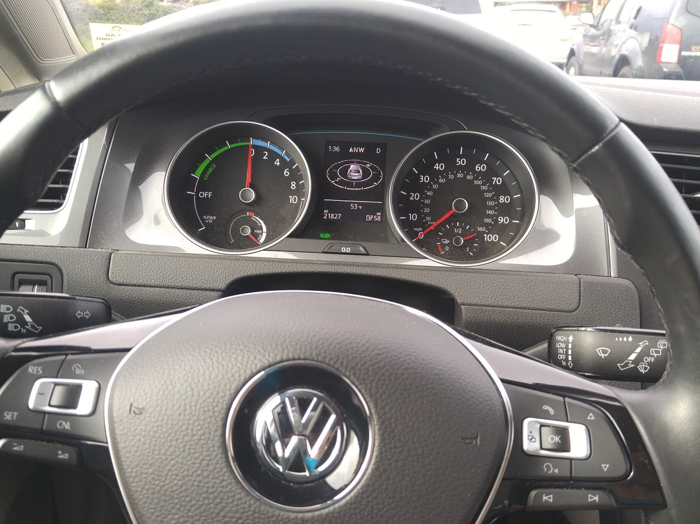
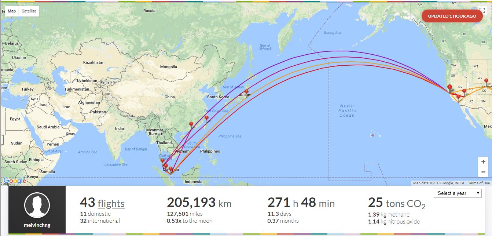
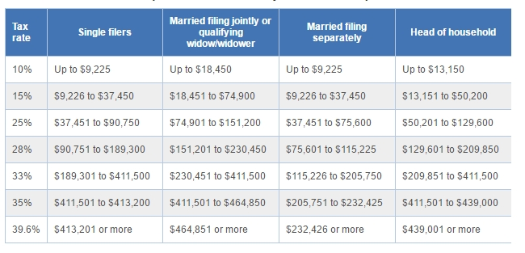
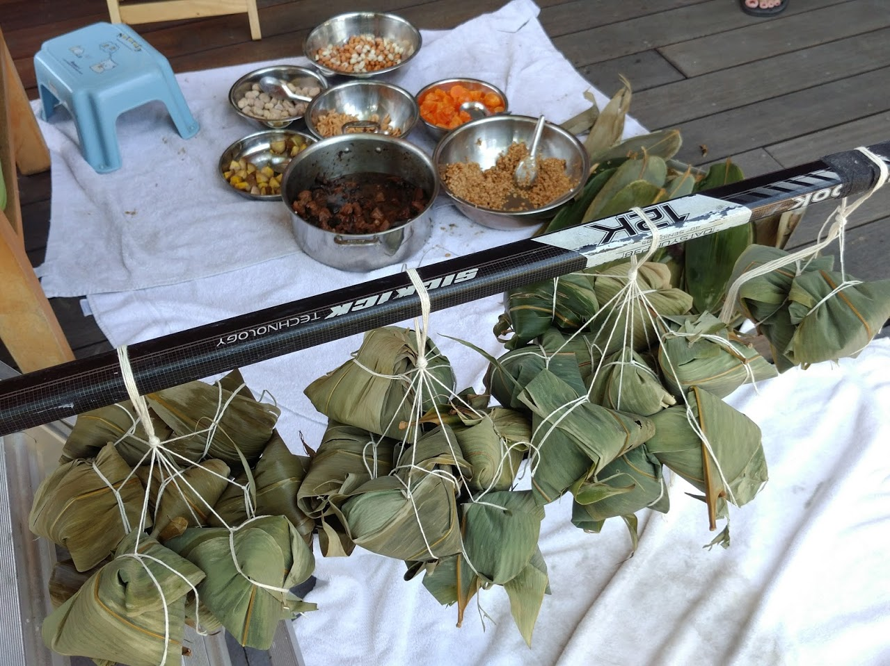

Last modified: Fri Mar 23 2018 21:04:12 GMT+0800 (Malay Peninsula Standard Time)
What Have I Learnt in US
Over the last 4-5 years living in US, I learnt a lot while trying to do everything by myself. Although, when I was a kid, my mom started giving me the chances to decide my own thing, there are still more things that I have to figure out by myself when I moved to the USA. The ride is not wild but fun. I compiled a list of interesting thing that I found out, learnt, and based on my observation below. You may disagree with certain things that I listed.
College Orientation is Terrible
I am a first generation college student. There was a huge transition for me as school in Asia is a lot different compared to US. I attended the frosh orientation, which were required for everyone, to get more information about the school. Since the orientation was the last session before the college begin, there aren't a lot of students attending. Since it was hosted and planned by student group that work for the school, my frosh orientation was bad and unorganized. They simply put in some classes in the worksheet I got and asked us to enroll into the random classes. Luckily, I was not one of the people that follow their instruction to do so. In fact, I looked up stuff from the school website and get a sense which classes are required.
Until today, my friends and I will still complain how terrible the orientation was when we had a conversation about it. Those people who did not do research ended up taking classes that they do not really need.
There is many homeless
In my own opinion, it is unacceptable to have homeless problems in such an advance country. Homeless can be seen almost everywhere that I went, especially in downtown of the city. Although there were a lot of ongoing projects about trying to solve homeless issue, I saw a lot of successful projects that were created by people during a competition but they were not adopted by the government.
It is crowded everywhere
I dislike the fact that places were crowded during the weekend. If you wanted to eat in a restaurant during the weekend or at night during the weekday, there will be a line usually. Depending on the number of people you went with, you might be required to wait for up to 45 minutes to an hour just for a table of 5 or 6.
Female May Get Better Job Opportunity
Most companies are trying to go towards diversity route. I was told directly from my friend that was involved. She told me that the reason why she was hired by one of the top tech companies was due to the fact that the company was trying to be more diverse. She had no experience and background in the job that she was working.
Everyone has Allergies
Having allergy was very common in the US. Almost everyone that I met in the US has some sort of allergies. Spring allergy was one of the allergy that almost everyone had. I had no comment on this. I felt weird when I realized that people there had all sort of random allergies.
There Are Many Unspoken Rules
There are many unspoken rules everywhere. What it means is you have to observe and talk to people that close to you in order to figure out the rules. Talk to your friends more and you will be told about it.
Traffic in US is Horrible
When I first came to US, I will expect the local government will have a solution to solve the traffic problem since they are a country that ism ore advance. However, it is the other way around. Traffic in the US is horrible, especially when it comes to big cities. Usually, without a traffic, you can reach the destination in 20 minutes. With traffic, it may take at least 40 minutes.
For those people who work and would like to beat the traffic, they have to stay and go the opposite direction of the traffic. Depending on the places, some people has to leave as early as 6am for and leave from work after 8pm to beat/avoid the traffic. Personally, I hate traffic. Even when I am in my hometown, I refused to go out when there is rush hour.
$200K/year To Own a House
Based on a conversation that I have with my professor privately. I found out that in order for you to get a house in USA where I live (San Francisco Bay Area), you have to make at least $200K per year. This is ridiculous as there is no single job in the Bay Area that offers $200K unless you are working high up in the company. Until this point, there are only two people that I knew that received $100K for their first full time job. It is impossible for a single working parent to own a house here if you would like to stay close to work (1 hour away).
Most of my friends that I talked to, their parents are unable to afford a house due to the high price. A studio apartment in my area is around $2000 and a one bed room apartment is at around $2300. Don't forget that the price of the housing goes up about 10% a year, this means that the rent is going up too!
Well, in my own opinion, it is super depressing to see this happens in such an advance country. You may debate that if you moved away from the city, the housing may be cheaper. That is true, but what are you going to do for living there?
Possible Without a Car
It is possible to stay in the USA without a car, at least for place where I stay in. One thing that I will miss the most is how fast you can get things from the internet. There are many e-commerce website in the USA that allow you to get your item delivered as fast as within the 1 hour window after your order is placed. It is faster to get it online than getting it in person. Online shopping saves you a lot of time!
I would also like to thank all my friends that have given me a rides before. People that give you a ride are probably the best person in the world!
You Have To Own Everything
Charges for Labor are very expensive in the USA. If you are a person like me that love to do everything by your own, you have to own almost everything. People that loves to fix stuff will never complain that they have too many tools.
Garage is Storage Room
I will be amazed how many families in the USA use their garage properly: store a car. Most of the garages I have seen are filled with their own stuff.
A- = 90/100 in US
The most interesting thing that will amaze everyone that I talked to is the grading scale in USA.

People always expect that grading in USA will be a lot easier than other countries. In fact, it is the opposite around.
Friends that Talk About Money
There are two types of friends that I knew: one that always calculate money with me but one is not. I am alright if they calculate up to a single penny with me as the money as money that they are spending right now may belongs to their parents. However, I expect those people in the group pays back exactly what they owe their friend. Of course, things are not happened that way.
People that Never Pitch In Suck
I worked on many projects with many people before. Most of the projects that I worked on were sponsored. There were some projects that we had to pay for ourselves. I always offered to pitch in to the project if it was paid by my friends. It was a form of respect to my friend. However, I had friends that will act like they do not know anything when it comes to that. The good thing was I did not really care even if they did not pitch in. I felt very lucky to be in a family that had my activities supported by my parents.
Parking Is Free Almost Everywhere
One good things about living in the US is parking is usually free in the public places such as plaza, complex, and shopping mall. However parking fee was still required in the downtown (city centre). Parking may vary depending on the city you are in.
Electric Car is Fun To Drive
When my aunt or uncle are away for trips (kids' games or business trip), they will try to ask me if I am available to send them to airport. Then, they will let me drive their car when they are away. My uncle leased (you can lease almost everything in US if you do not feel like owning it) a VW E-Golf for three years when it first came out in 2015.

I love to drive it and it was very fun to drive. However, I can feel that the battery is depreciating as it did not feel that powerful as before (first time I drove not long he got it vs two months ago - close to three years old). The drawback is you have to remember to charge the car. Charging at 110V @ 10A is 4 miles/hour while 240V @ 40A gives you 20 miles/hour. It is good for city driving, but not long distance since you get about 70 miles highway miles per charge.
The main reason he leased an EV is because he can use carpool lane to work during the rush hour. But carpool lane will still be crowded during rush hour. :/
Things in US is Cheap
I love to buy used stuff. As long as there is huge a price difference between new and used stuff, I will always buy it, even though I do not need it. There are people that surprised how many stuff I have and used to complain about it until one day: the day that they asked if I have something that they need.
They Are Not Racist
When I was back to Malaysia for my summer or winter break, one question that people will ask is whether people in US are racists. Things may be different compared to what you have seen on the news or TV. My friends (white, black, asian) are awesome and super respectful. They respect people like me that has different culture. I would say they pay and give respect more than people I met in my hometown.
Last Minute Flight Is Cheap Too
People always say that you should buy your flight as fast as possible, planned it half a year ago to secure lowest fare on for your trip. I am here to say that the fact is wrong. I have bought my flight as early as a half a year (or more) before my departure date and as late as 10 days before my departure. I have found out that last minute flight (international and domestic) may be a lot cheaper than your super advance trip.
Image below shows the total flight I took from the day I depart Malaysia for college to my last fight (last flight not included).

American Born Are More Considerate
There are two ways types of Asian in America: locally born and fresh off the boat (came to US when they were young: ~9 years old). After socializing with them, I can clearly see that those people that are born locally are, clearly, more considerate when it comes to trying to agree with something. It may due to the education that they gone through in the school when they were young.
Notary is expensive
I am super surprised how expensive notary is in United States. If you do not kno what notary is, it is the description I found on the internet: a person authorized to perform certain legal formalities, especially to draw up or certify contracts, deeds, and other documents for use in other jurisdictions.
I was trying to get my school documents certified as a true copy (copy from copy machine). I went to school to ask if they can provide this service. It is super common to have person in charged to handle these operation, especially for large institution. I was told that they no longer provide this service and it was now handled by third party. I checked with another location on the school campus that stated on the website that offered this service, Associate Student Service Center on the school, and was told it will cost me $15 per signature.
E-Waste is Terrible
It is easy to find recycle bin in the US, but it is kind of hard to find e-waste recycling center. I swapped out my laptop battery and wanted to find a place to recycle it. I went to the school and tried to recycle my laptop battery in computer center as it stated on the school website that it had the service. Unfortunately, they told me that they stopped doing that.
Sales Tax Are High
Depending the state that you are living in, the sales tax are very high. Sales tax varies depending on the county you are in. In the county that I was in, I paid 9.25% sales tax. There are a few states that has no sales tax. However, resident in the state has to pay a very high amount of income taxes.
They Charge For Everything
Nothing is free in USA except for water. Interestingly, water must be given for free in USA to the customer in the restaurant. Every event in the US requires you to pay. Unlike events in my hometown, entrance fee is not required usually.
Gasoline or Petrol Is Expensive
Gasoline or Petrol is expensive in the US any varies from location and stations. There are usually a few gas stations that stay in one spot. Each gas station may have a different pricing. However, there are people that still choose to go to the gas station that charges higher price. A gallon (3.8L) of gas may cost up to $4 in California. The reason why it is so high is due to the tax is added to the cost of gasoline. The money will goes to the state government for some purposes.
Possible to get $100K/year For First Job
I had quite a few friends (resident in US) graduated from the same school that I was in, received $100K/year offer for his first job. There is a lot story that I can tell about this, but might be too technical for some people.
Income Tax In US Is Very High
I was very surprised when I first saw how much people in the US were required to pay for their income tax. I included a picture of the income tax rates below. Although the table was for the year 2016, but the rates were fairly similar.

Yup, if you made $100K/year in the US and single, you were expected to pay $28K worth of taxes (fall into 28% band).
Engineering may not be for you
I heard and saw by my own eyes that people failed a few of their preparation of major classes as well as major classes and they were forced to switch to other major. There was one person that told me after she switched out from Engineering to business, her GPA for the semester was always 4.0. Luckily, I survived in the major I was in :)
Sign Up Offer For Job
Interestingly, if you accept the job offer that the company gave you, you might get a few thousand dollar for your sign up offer. It was not considered as part of the bonus. Just a one time offer that given by the company.
There is technically no tolls
Cities are connected with freeway. However, you are still required to pay toll to cross the bridge, drive on the scenic route or private neighborhood, or use the express lanes (special lanes on the freeway that is faster supposedly) on the freeway. Typically, the toll for bridge is $5, a few quarters or dollar for scenic route (I paid $10 for a private neighborhood scenic route personally), and a few cents or dimes (0.10 cent) per mile for express lanes.
Food Is Great!
I am the person who will not complain the price of the food if the food quality and services matches the price. A $20 meal should have $20 quality or better, but not less. I will only complain if the food does not meet the quality. Since I was living in the San Francisco Bay Area, there are a variety of food: Asian, Mexican, American, Thai, New Mex, Vietnamese, Italian, German, Burmese, Malaysian, etc. To be honest, I do not have any preferences. In the other hand, once you are away from San Francisco Bay Area, your food choices is very limited, mainly american food.
I have to thank my aunt that always invite me out to dine with them. I tried a lot of food that I did not have chance to try if I was not with them. Also, I have to thank that classmates that introduced/made authentic food that based on their ethnic group.
I Know How to Cook!
I am a food lover or everyone is? My mom does not know how to cook but she started cooking recently. I cook when I am free and eat out or to go (take away) food when I am busy. I do not like to freeze anything. I found out that preparing meat at home was difficult since I had to cook everything in one shot or else it will goes bad if I leave it there for days without freezing it. I prefer eating vegetable at home for my meals.
Throughout the years, I made interesting food. Whatever I was craving for, I will just try my best to make it. Usually, I will success on my first time but not the second time. That's why I usually do not make it more than two times in a week. These are the food that I cook on January 2018 when I visited my friend in other state in US.
I bake too, but not very often. I made my own moon cake from scratch one year when I was free during the moon cake festival.
On June 2017, my aunt taught me how to make my own Zong Zi.

I love to cook. It is a way for me to reduce my stress and forgot about my school work.
30 Days Return
USA is one of the best place to shop in my own opinion. They have very flexible return policy. If you do not like it, just return it. Some of the places even has 120 days or longer return window. Sometimes, they do not even need a receipt to trace when that item was bought (I do not want to be technical on how it works). It works the same even if you purchased a used or open box item.